Orangea sången storyboard
Avsnitt 006, utkast. Bilderna är byggda av utklippen i assets/ med ansiktena ritade i kod; det som inte finns än är platta former i rätt färg. Pilarna och strecken visar rörelsen.
Intro
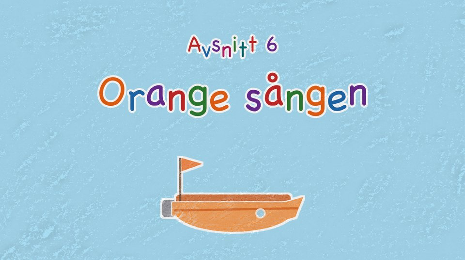
(titeln syns, ingen röst)
Samma intro som 003–005 med nytt nummer och ny titel: Avsnitt 6 · Orangea sången. Ljusblå vägg och en liten orange båt på kortet. (Bilden här är ritad i bygg.py; introt renderas som 005:s när det görs.)
fastKritan ritar
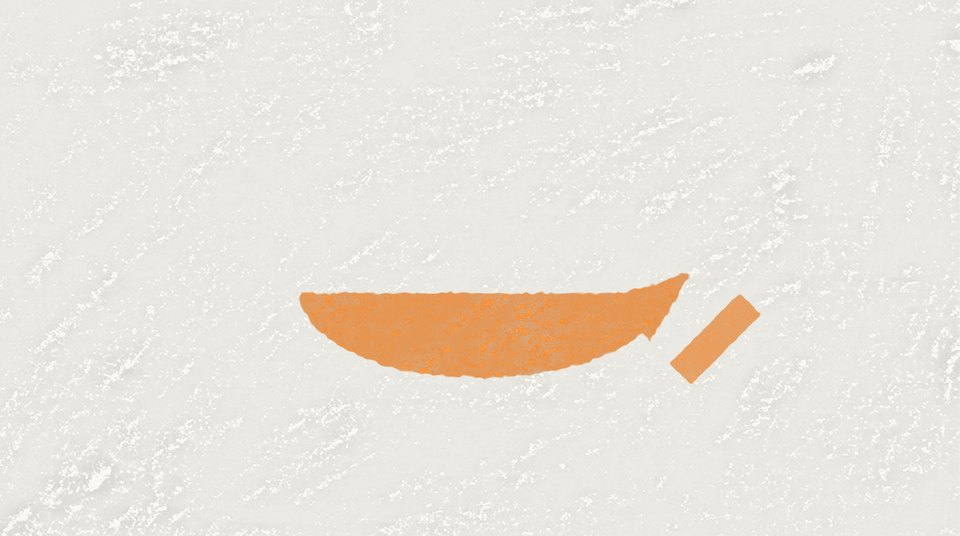
(skrrrrt)
”Kritan ritar, orange, lång …”: kritan ritar ett långt orange skrov med en grop i mitten och en hög spets åt höger (först ser det ut som en sko), och drar en ljus rand längs det.
1 papper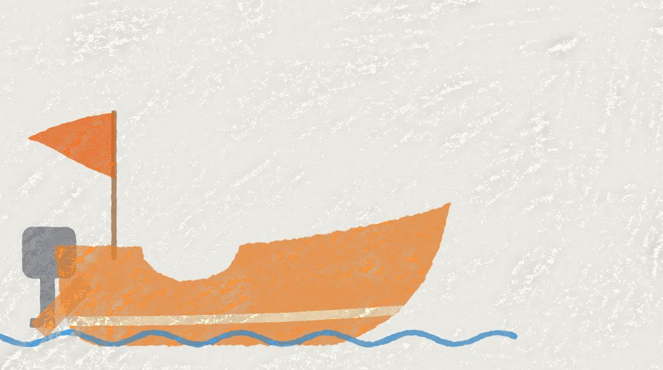
(skrrt, skrrt)
”vad kan det vara?”: en pinne med en orange flagga bak, en vågig blå linje under skrovet och en liten grå motor bak, medan det sjungs.
1 papper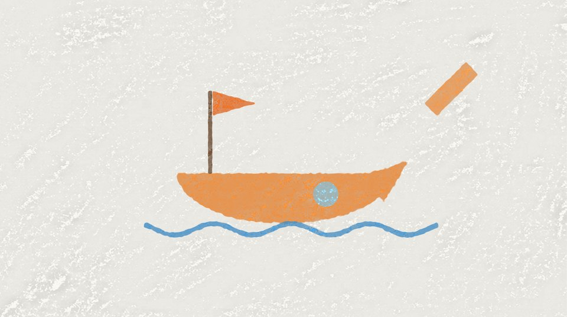
(skrrt)
”Vad kan det vara?” och pausen: kritan ritar ett runt litet fönster (ventil), den sista ledtråden, och lyfter bort från det så att det syns.
1 papper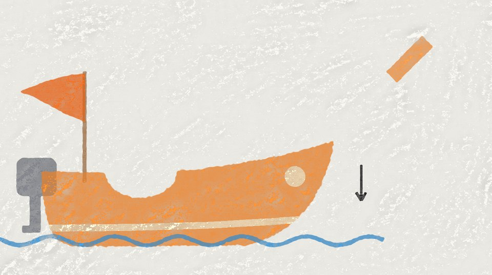
(tut-tut)
”En båt! En orange båt! Tut-tut, nu kör vi!”: båten gungar till på vågen och kritan lyfter ut. Sist åker kameran in i teckningen, dit den riktiga båten står i 03.
1 papperA · Sjön
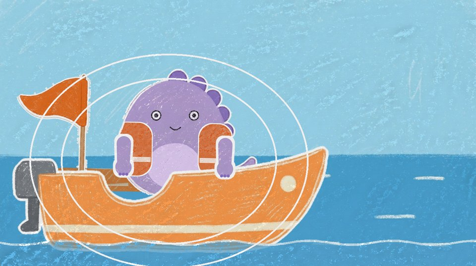
(swoosh)
Zoom in i den ritade båten: den blir Disas båt på sjön. Disa sitter redan i båten med flytvästen på. Mellanspelet börjar.
zoom in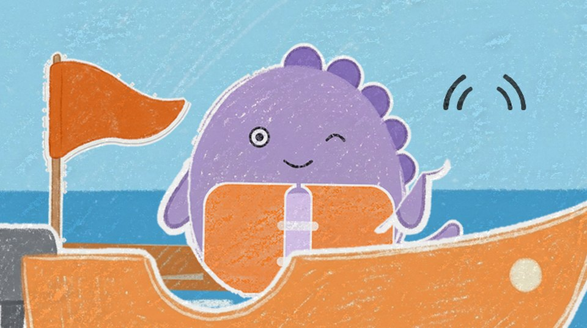
DISA: Hej hej!
Disa vinkar till tittaren. Grooven startar, instrumentalt. Inget talat ”Tut-tut, nu kör vi!”: det sjöngs nyss.
3 närbild DisaHon lägger tassarna på båtens kant och tittar framåt.
3 närbild Disa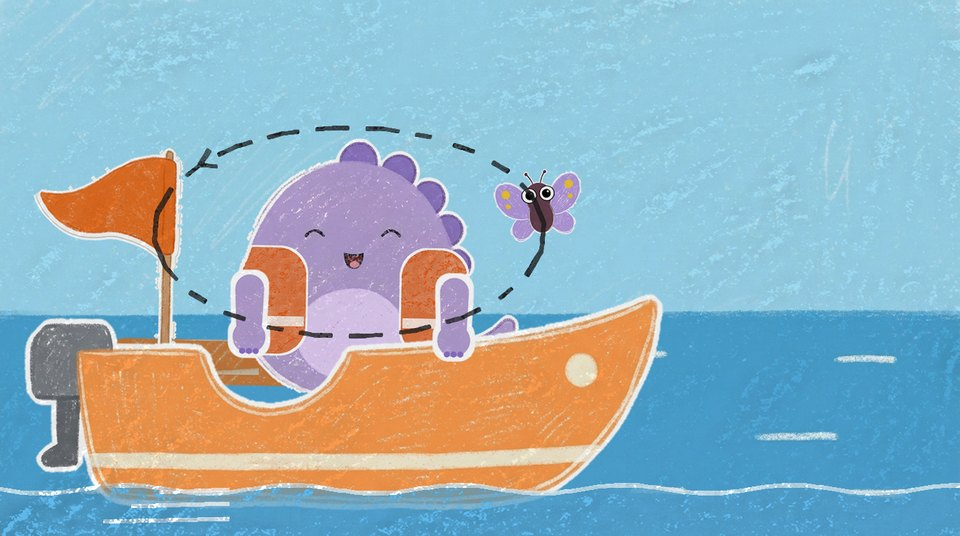
(putt, putt)
Mellanspel och vers 1 rad 1–2. Sjön glider, båten gungar på vågorna med kölvatten bakom. Fjärilen Fia fladdrar förbi högt uppe, den enda rörelsen i bakgrunden.
2 körscen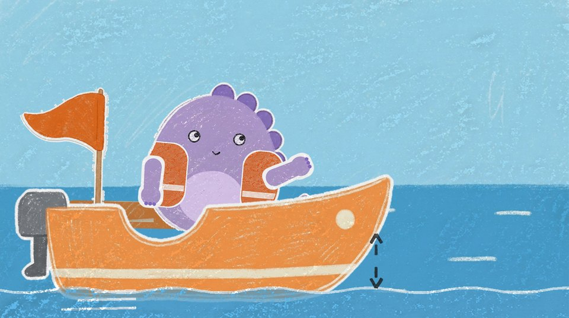
”Dinon letar orange nu, leta med – jag och du!”: samma körscen, Disa pekar framåt och tittar dit, som ”Titta ut!” i refrängen, så att barnet kan peka med.
2 körscenRefräng
![Refrängdansen, likadan båda gångerna (se sang.md) och lugn: en enda dansbild på sjön för rad 1–7, utan klipp på slagen. Rad 1–2 ”Orange! (Orange!) Orange! (Orange!)”: Disa sträcker båda armarna rakt upp och båten gungar mjukt upp på en våg och ner igen, en gång per ”Orange! (Orange!)”. På refrängens första slag glider hela sjön långsamt över till orange (himlen ljus persika #FFD6AA, vattnet djupare orange), och den stannar orange hela refrängen. Båten får sin mörkorange kontur så att den syns mot vattnet. Inga blink.](frames/05a.jpg)
Refrängdansen, likadan båda gångerna (se sang.md) och lugn: en enda dansbild på sjön för rad 1–7, utan klipp på slagen. Rad 1–2 ”Orange! (Orange!) Orange! (Orange!)”: Disa sträcker båda armarna rakt upp och båten gungar mjukt upp på en våg och ner igen, en gång per ”Orange! (Orange!)”. På refrängens första slag glider hela sjön långsamt över till orange (himlen ljus persika #FFD6AA, vattnet djupare orange), och den stannar orange hela refrängen. Båten får sin mörkorange kontur så att den syns mot vattnet. Inga blink.
6 dansbild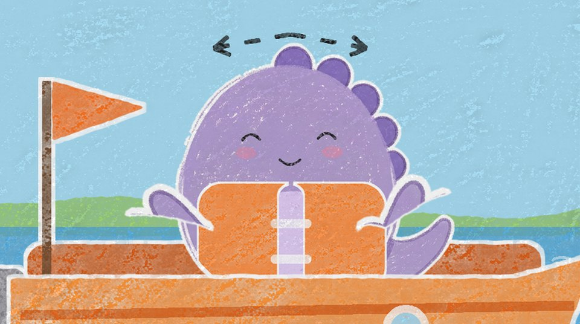
Rad 3 ”Orange är bästa färgen!”: samma bild, inget klipp. Händerna in mot magen (så långt in på den ljuslila magen de korta armarna når), hon gungar långsamt åt sidorna i halvtakt. Sjön är fortfarande orange.
6 dansbild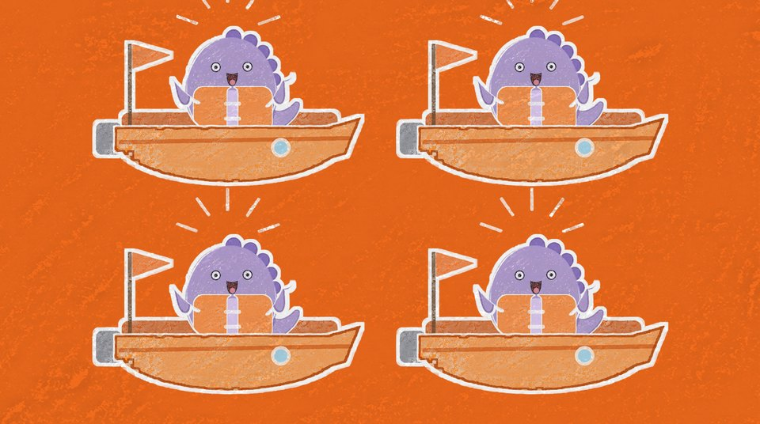
Rad 4–5 ”Orange! (Orange!) Orange! (Orange!)”: samma bild, armarna upp igen och samma mjuka gung som rad 1–2.
6 dansbild![Rad 6 ”Som en fin apelsin!”: apelsinens lilla ögonblick i samma dansbild, inget klipp. På radens första halva slag poppar en stor bubbla med apelsinen upp i himlen till höger om Disa (glitter), och kameran glider mjukt in mot Disa och bubblan (zoom 1,2 på ett och ett halvt slag). Fem mjuka vita glimtar med persikosken tänds en i taget runt bubblan och tindrar sakta (de växer och krymper lite på fyra slag, blinkar aldrig). Apelsinen har ett nöjt, lite kaxigt ansikte (slutna ögon, belåtet leende), gungar nöjt åt sidorna på slagen och blinkar på sista slaget. Disa pekar rakt på den, ritar en cirkel runt den med tassen och skrattar. På sista slaget glider kameran tillbaka ut, bubblan och glimtarna krymper bort och armarna landar där rad 7 börjar, så att dansbilden fortsätter utan ryck.](frames/05d.jpg)
(glitter)
Rad 6 ”Som en fin apelsin!”: apelsinens lilla ögonblick i samma dansbild, inget klipp. På radens första halva slag poppar en stor bubbla med apelsinen upp i himlen till höger om Disa (glitter), och kameran glider mjukt in mot Disa och bubblan (zoom 1,2 på ett och ett halvt slag). Fem mjuka vita glimtar med persikosken tänds en i taget runt bubblan och tindrar sakta (de växer och krymper lite på fyra slag, blinkar aldrig). Apelsinen har ett nöjt, lite kaxigt ansikte (slutna ögon, belåtet leende), gungar nöjt åt sidorna på slagen och blinkar på sista slaget. Disa pekar rakt på den, ritar en cirkel runt den med tassen och skrattar. På sista slaget glider kameran tillbaka ut, bubblan och glimtarna krymper bort och armarna landar där rad 7 börjar, så att dansbilden fortsätter utan ryck.
6 dansbild
(tut, tut: mistluren)
Rad 7 ”Tut, tut, tut, tut”: samma bild, båten gungar två gånger på de första ”tut, tut”, och på de sista gör Disa två små knytnävspumpar. Tutet är båtens mistlur.
6 dansbild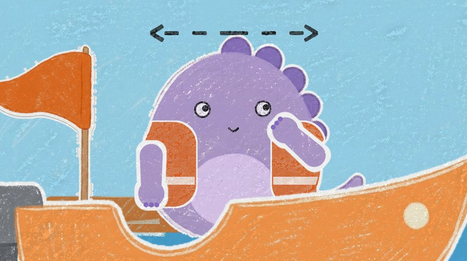
Rad 8 ”vad är orange? Titta ut!”, refrängens enda klipp: närbild. Disa pekar ut åt höger med ena armen och tittar dit, och sedan med den andra armen åt vänster och tittar dit (de korta armarna når inte upp över ögonen). På radens sista slag glider sjön tillbaka till blått.
3 närbild DisaA · Sjön
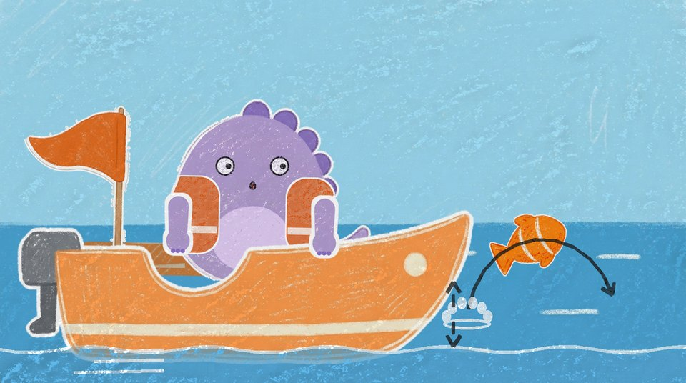
(plask)
”Vad är orange?”: en stor orange fisk hoppar upp ur vattnet mitt framför fören i en hög båge, med ett tydligt plask med droppar. Disa blir förvånad och tittar dit.
2 körscen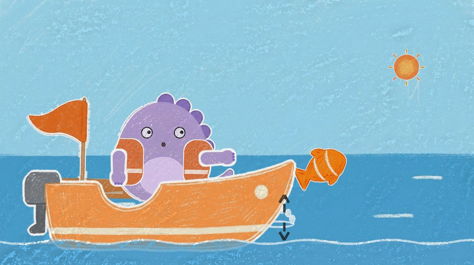
”Titta där! Fisken är orange”: sjön stannar och Disa pekar på fisken.
2 körscen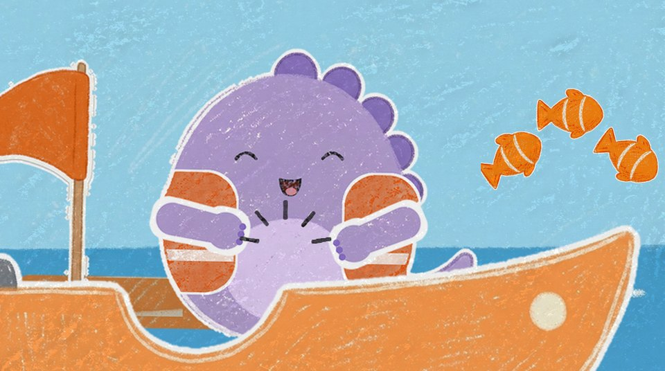
(plask, plask, plask)
”plask, plask, plask”: närbild, fisken hoppar tre gånger i en båge över vattnet till höger om båten (hela bågen i bild), och Disa klappar en gång per plask.
3 närbild Disa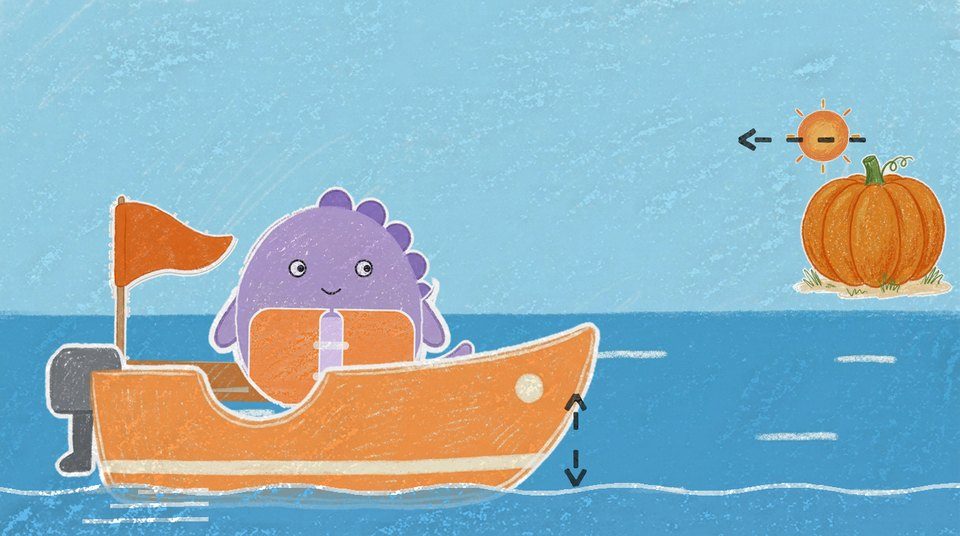
”Vad är orange?”: sjön glider igen, fisken är borta, en liten orange fågel flyger in från höger över vattnet.
2 körscen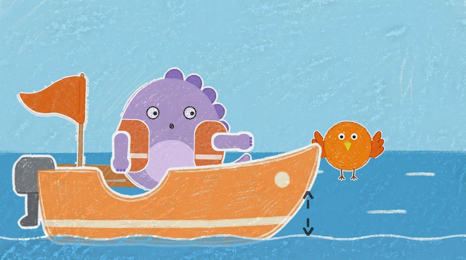
”Titta där! Fågeln är orange”: sjön stannar, fågeln fladdrar på stället nere vid vattnet framför fören, och Disa pekar på den.
2 körscen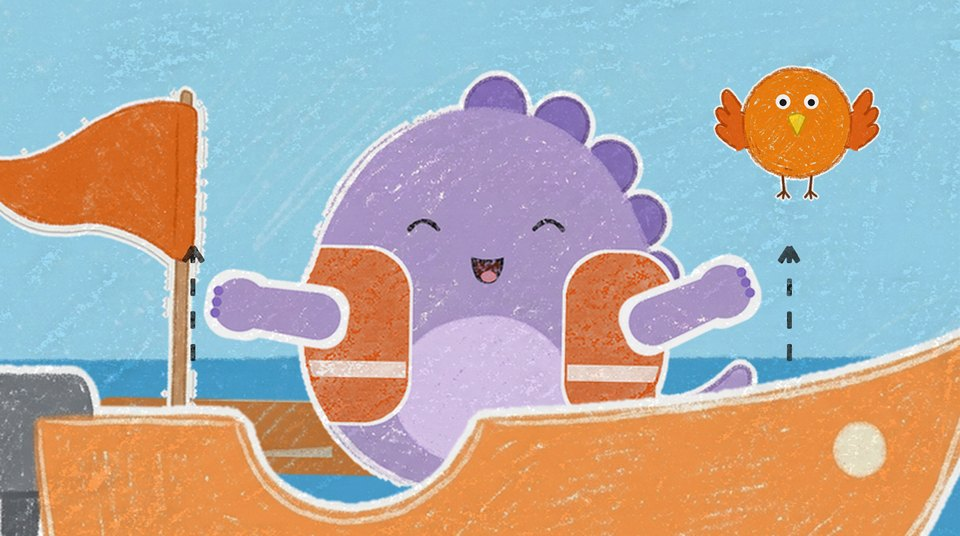
”pip, pip, pip”: närbild, Disa flaxar med armarna som vingar, en gång per ”pip”. Fågeln fladdrar bredvid henne, uppe till höger men inte i hörnet.
3 närbild Disa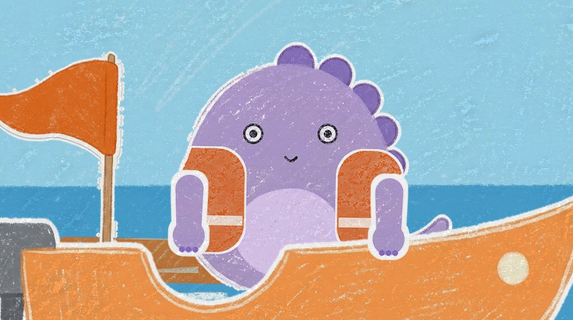
”Vad mer är orange? Kan du se?”: frågan till tittaren. Disa tittar ut mot tittaren med huvudet på sned och tassarna uppåt, frågande (som 13e).
3 närbild Disa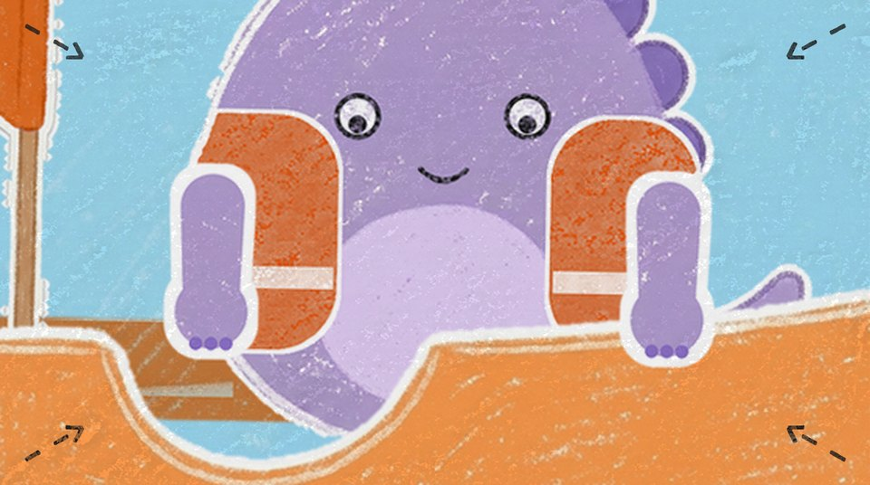
Pausen, ca 4,6 s (två inlagda takter, se Klippet). Ledtråd: Disa tittar tydligt ner på sin mage (blicken och ansiktet nere), och kameran åker in långsamt och mjukt till ca 1,25× mot den orange flytvästen, men inte längre än att hela huvudet med taggarna och västen syns, med luft ovanför. I 08b glider den ut igen. Inåkningen är det enda som rör sig. Bilden visar slutläget; pilarna visar inåkningen.
3 närbild Disa, inåkning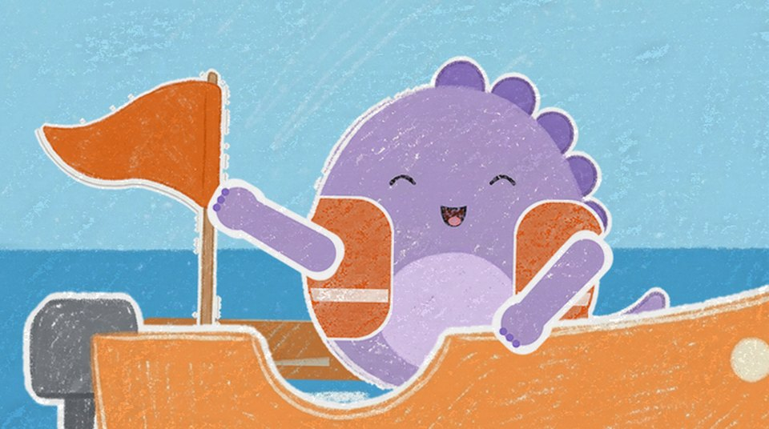
”Västen är orange – och flaggan med!”: Disa klappar på västen, pekar bakåt på båtens orange flagga och tittar upp på den.
3 närbild Disa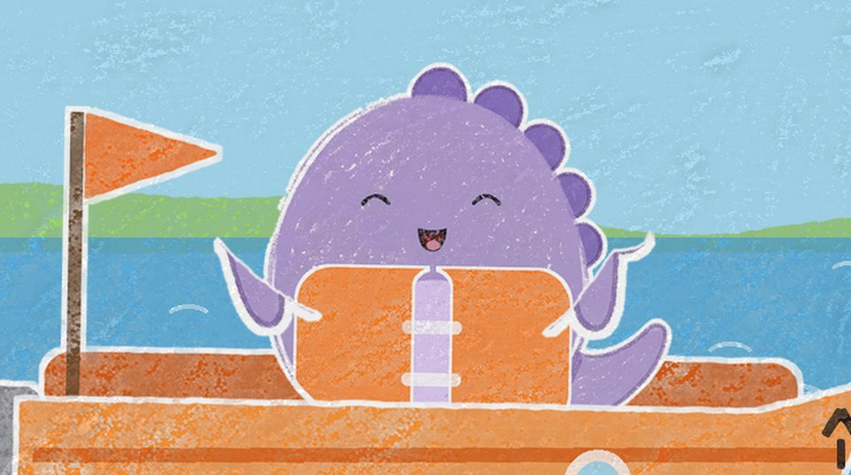
(dunk, dunk, dunk)
”Dunk, dunk, dunk!”: hon klappar på relingen med båda tassarna, tre gånger, så att båten gungar. Barnet kan klappa på bordet.
3 närbild DisaRefräng
![Refrängdansen, likadan båda gångerna (se sang.md) och lugn: en enda dansbild på sjön för rad 1–7, utan klipp på slagen. Rad 1–2 ”Orange! (Orange!) Orange! (Orange!)”: Disa sträcker båda armarna rakt upp och båten gungar mjukt upp på en våg och ner igen, en gång per ”Orange! (Orange!)”. På refrängens första slag glider hela sjön långsamt över till orange (himlen ljus persika #FFD6AA, vattnet djupare orange), och den stannar orange hela refrängen. Båten får sin mörkorange kontur så att den syns mot vattnet. Inga blink.](frames/09a.jpg)
Refrängdansen, likadan båda gångerna (se sang.md) och lugn: en enda dansbild på sjön för rad 1–7, utan klipp på slagen. Rad 1–2 ”Orange! (Orange!) Orange! (Orange!)”: Disa sträcker båda armarna rakt upp och båten gungar mjukt upp på en våg och ner igen, en gång per ”Orange! (Orange!)”. På refrängens första slag glider hela sjön långsamt över till orange (himlen ljus persika #FFD6AA, vattnet djupare orange), och den stannar orange hela refrängen. Båten får sin mörkorange kontur så att den syns mot vattnet. Inga blink.
6 dansbild
Rad 3 ”Orange är bästa färgen!”: samma bild, inget klipp. Händerna in mot magen (så långt in på den ljuslila magen de korta armarna når), hon gungar långsamt åt sidorna i halvtakt. Sjön är fortfarande orange.
6 dansbild
Rad 4–5 ”Orange! (Orange!) Orange! (Orange!)”: samma bild, armarna upp igen och samma mjuka gung som rad 1–2.
6 dansbild![Rad 6 ”Som en fin apelsin!”: apelsinens lilla ögonblick i samma dansbild, inget klipp. På radens första halva slag poppar en stor bubbla med apelsinen upp i himlen till höger om Disa (glitter), och kameran glider mjukt in mot Disa och bubblan (zoom 1,2 på ett och ett halvt slag). Fem mjuka vita glimtar med persikosken tänds en i taget runt bubblan och tindrar sakta (de växer och krymper lite på fyra slag, blinkar aldrig). Apelsinen har ett nöjt, lite kaxigt ansikte (slutna ögon, belåtet leende), gungar nöjt åt sidorna på slagen och blinkar på sista slaget. Disa pekar rakt på den, ritar en cirkel runt den med tassen och skrattar. På sista slaget glider kameran tillbaka ut, bubblan och glimtarna krymper bort och armarna landar där rad 7 börjar, så att dansbilden fortsätter utan ryck.](frames/09d.jpg)
(glitter)
Rad 6 ”Som en fin apelsin!”: apelsinens lilla ögonblick i samma dansbild, inget klipp. På radens första halva slag poppar en stor bubbla med apelsinen upp i himlen till höger om Disa (glitter), och kameran glider mjukt in mot Disa och bubblan (zoom 1,2 på ett och ett halvt slag). Fem mjuka vita glimtar med persikosken tänds en i taget runt bubblan och tindrar sakta (de växer och krymper lite på fyra slag, blinkar aldrig). Apelsinen har ett nöjt, lite kaxigt ansikte (slutna ögon, belåtet leende), gungar nöjt åt sidorna på slagen och blinkar på sista slaget. Disa pekar rakt på den, ritar en cirkel runt den med tassen och skrattar. På sista slaget glider kameran tillbaka ut, bubblan och glimtarna krymper bort och armarna landar där rad 7 börjar, så att dansbilden fortsätter utan ryck.
6 dansbild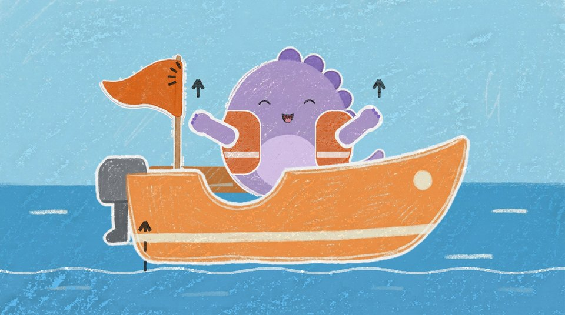
(tut, tut: mistluren)
Rad 7 ”Tut, tut, tut, tut”: samma bild, båten gungar två gånger på de första ”tut, tut”, och på de sista gör Disa två små knytnävspumpar. Tutet är båtens mistlur.
6 dansbild
Rad 8 ”vad är orange? Titta ut!”, refrängens enda klipp: närbild. Disa pekar ut åt höger med ena armen och tittar dit, och sedan med den andra armen åt vänster och tittar dit (de korta armarna når inte upp över ögonen). På radens sista slag glider sjön tillbaka till blått.
3 närbild DisaKritsvep
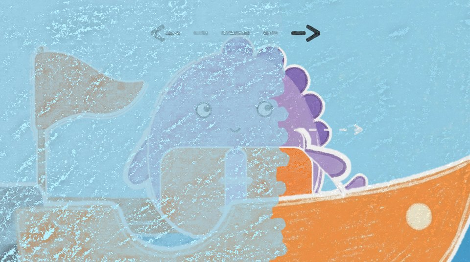
(skrrrrt)
Kritsvep i bryggans ljusblå (#A8DCF2), från vänster till höger, precis innan ”Vad är orange?”.
kritsvepB · Bryggan
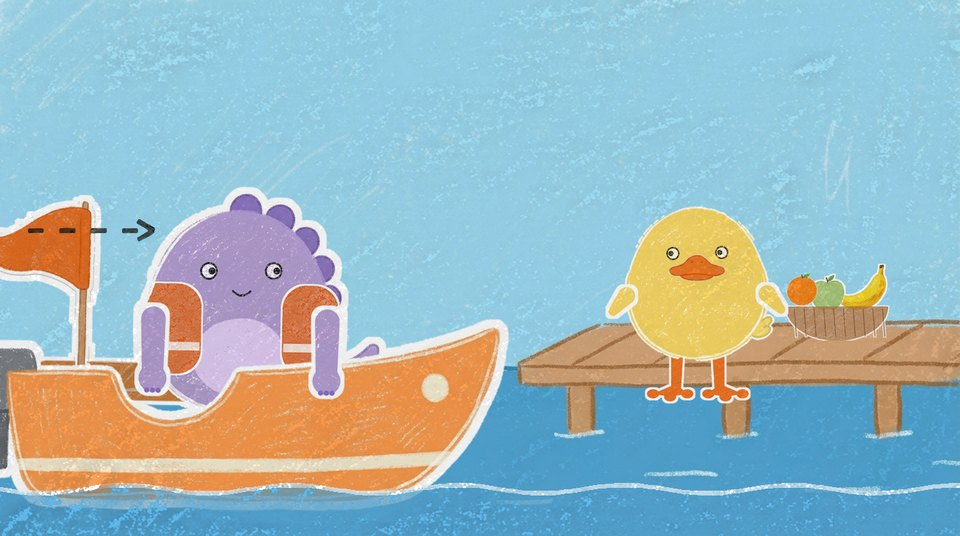
(putt, putt)
”Vad är orange?”: Agda sitter på bryggkanten med benen hängande över kanten och fruktkorgen bredvid sig. Båten puttrar in från vänster, hela båten i bild.
4 helbild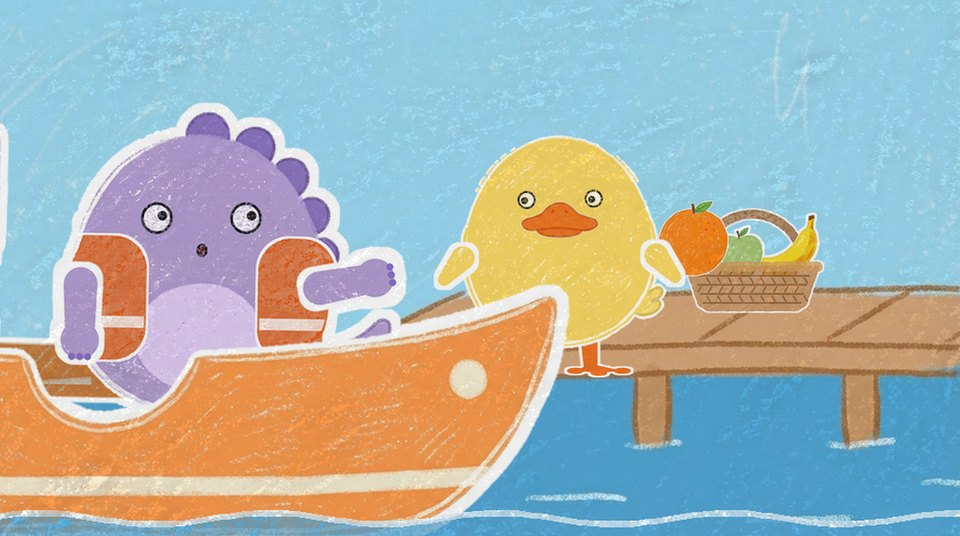
”Titta där! Apelsinen är orange”: båten har lagt till nedanför Agda och Disa pekar på apelsinen i korgen. Kameran glider långsamt in mot korgen (platsens enda kamerarörelse); bilden visar slutläget.
4 helbild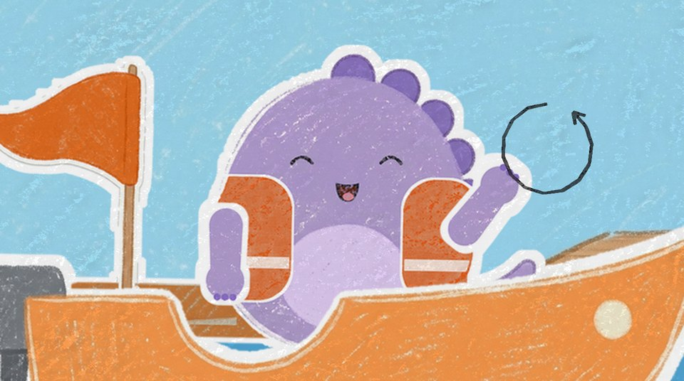
”rund, rund, rund”: närbild, Disa ritar en cirkel i luften framför sig med tassen.
3 närbild Disa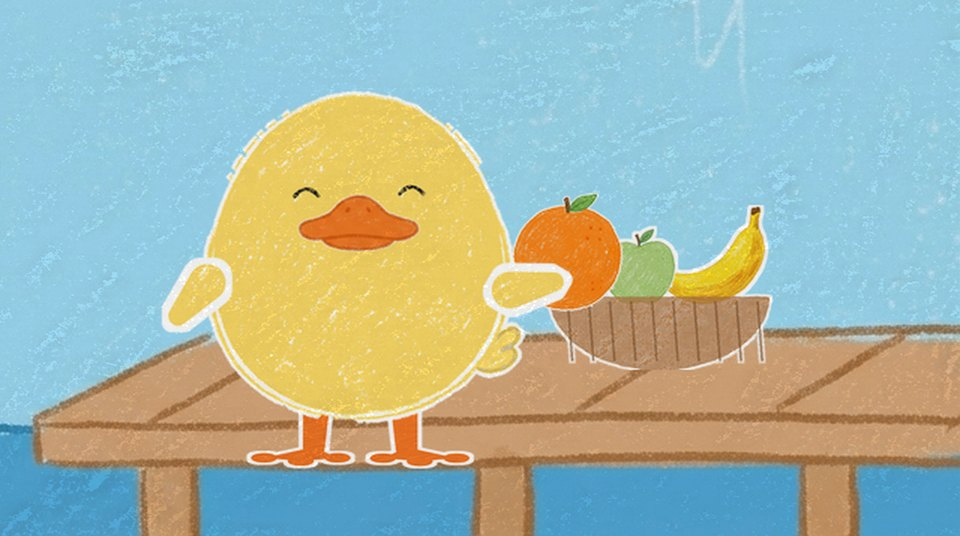
DISA: Hej, ankan! · AGDA: Kvack! Hej, Disa! Vad vill du ha?
Lucka i sången, ca 7,2 s (en takt bort, se Klippet), grooven fortsätter under. Närbild Agda med korgen: apelsinen (närmast Disa), det gröna äpplet och den gula bananen. Färgövningen: tre färger, Disa väljer.
5 närbild Agda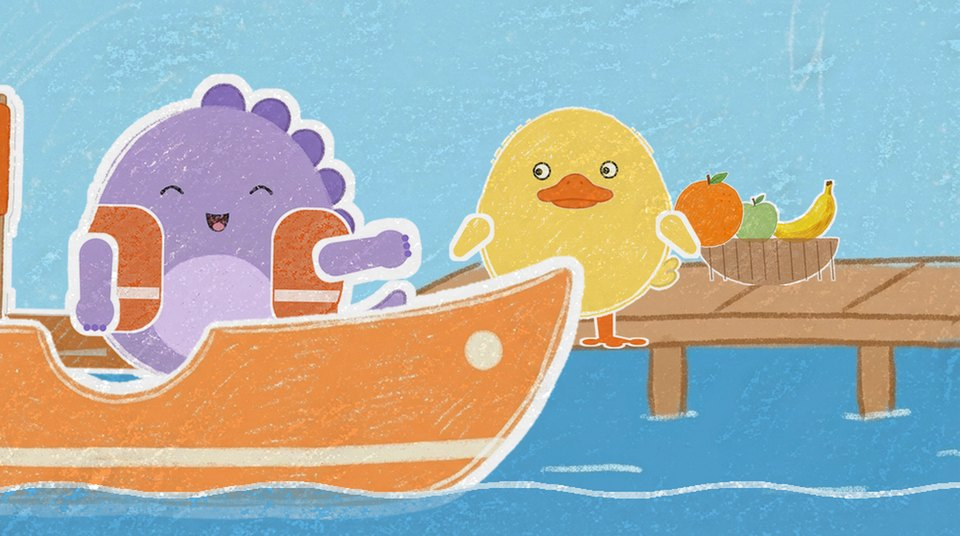
DISA: Apelsin, tack!
Klipp in till tvåbilden: Disa pekar på apelsinen i korgen.
4 tvåbild (helbilden närmare)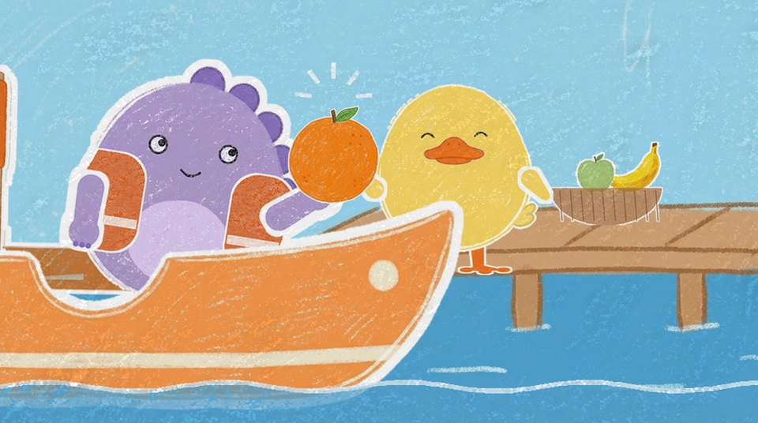
AGDA: Varsågod! · DISA: Tack! (pling)
Tvåbild: Agda räcker ner apelsinen från bryggan, och den syns stor i luften mellan hennes vinge och Disas tass. Disa tar emot den. Äpplet och bananen ligger kvar i korgen.
4 tvåbild (helbilden närmare)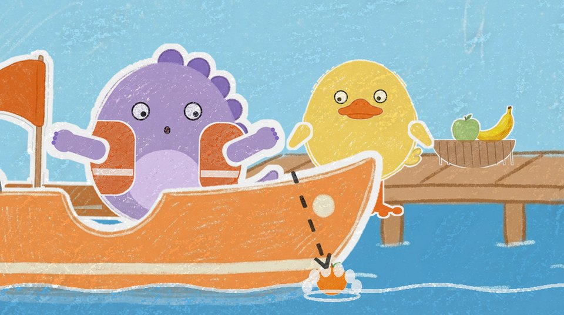
(plask!)
Vers 2, grooven tunnas ut. ”Oj, oj, plask! (Plask!)”: tvåbild, ett närmare utsnitt av helbilden. Apelsinen glider ur Disas tassar och plaskar i vattnet bredvid båten, kören ropar ”Plask!”. Båda blir förvånade.
4 tvåbild (helbilden närmare)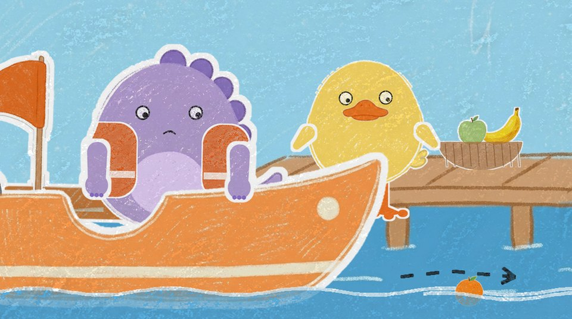
”Där flöt den bort!”: samma tvåbild, apelsinen guppar bort åt höger på vågorna.
4 tvåbild (helbilden närmare)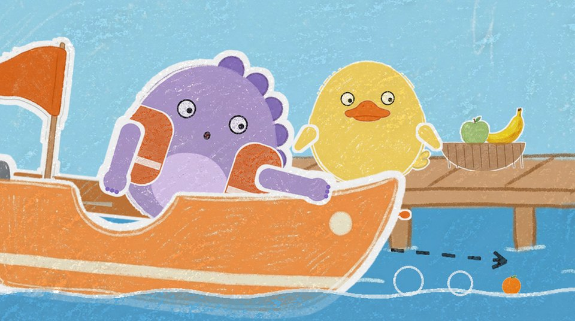
(Åh nej!)
”Längre, längre, längre bort …”: apelsinen blir mindre för varje ”längre” (spökringarna visar var den var), långt ut till höger. Disa sträcker sig över relingen men når inte, båten lutar lite. Kören: ”Åh nej!”.
4 tvåbild (helbilden närmare)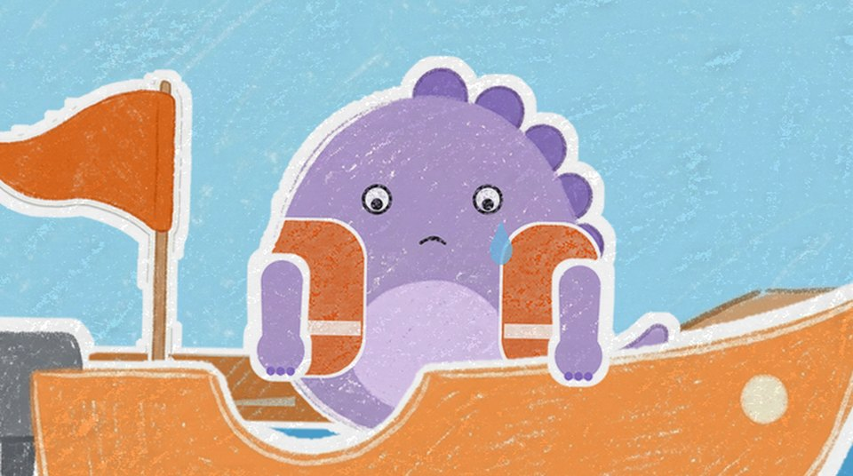
(snyft, snyft, snyft)
”Dinon är ledsen – snyft, snyft, snyft”: närbild, Disa ledsen med en liten tår, en snyft per ord. Bara raden ut (ca 2 s ledsen), inget mer.
3 närbild Disa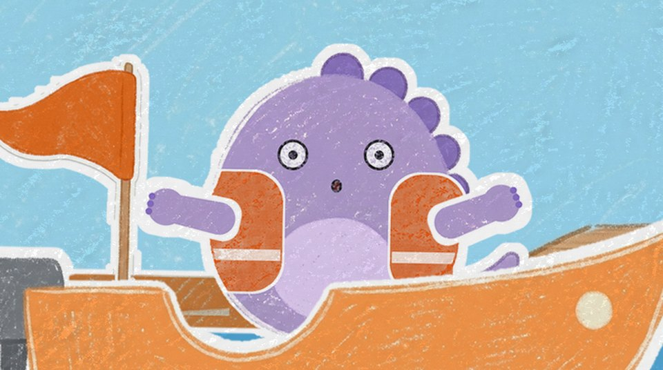
”Vem kan hjälpa? (Vem kan hjälpa?)”: närbild, Disa tittar ut mot tittaren med tassarna uppåt och en liten O-mun, frågande, inte ledsen längre.
3 närbild Disa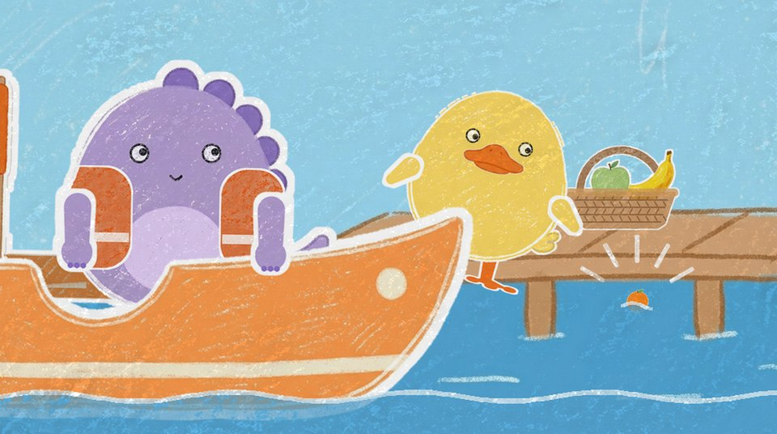
Den hållna pausen, ca 2,3 s: barnet hinner ropa ”Ankan!”. Tvåbild: Agda på bryggkanten vrider sig och pekar med vingen på apelsinen, som blänker på vattnet (ledtråden). Disa tittar på tittaren.
4 tvåbild (helbilden närmare)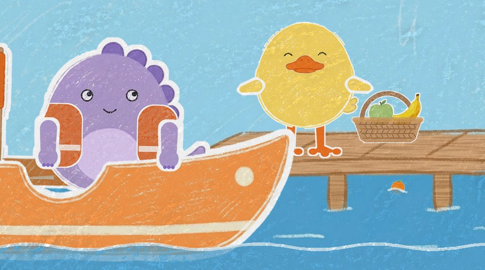
Vers 3, hela grooven tillbaka. ”Ankan! (Ankan!)”: Agda, som har suttit, ställer sig upp på bryggan med vingarna bakåt, redo att hoppa. Disa ser henne och blir glad.
4 tvåbild (helbilden närmare)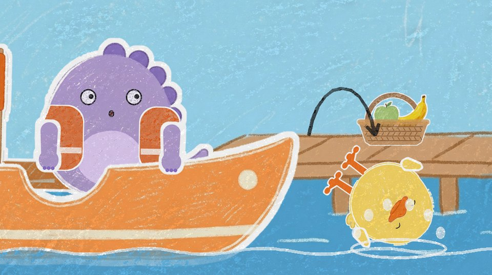
(plask!)
”Ankan hoppar i – plask!”: Agda dyker med huvudet före från bryggan, ett stort plask.
4 tvåbild (helbilden närmare)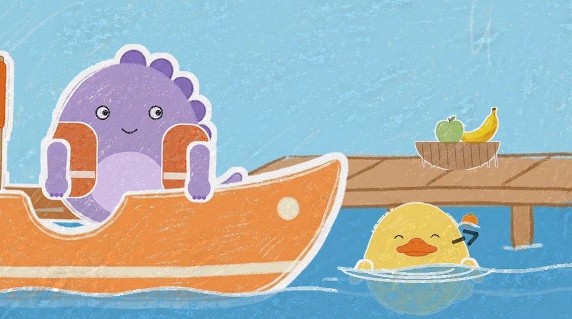
(kvack, kvack, kvack)
”Ankan simmar, kvack, kvack, kvack!”: Agda simmar ut mot apelsinen, bara huvudet över vattnet, ringar efter henne.
4 tvåbild (helbilden närmare)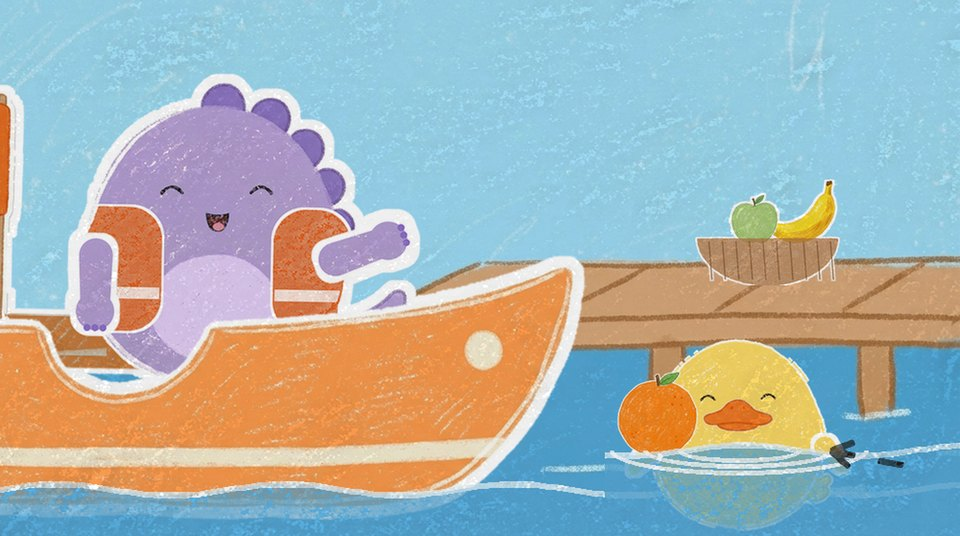
”Hit med apelsinen – hit, hit, hit!”: Agda knuffar apelsinen med näbben tillbaka till båten, en knuff per ”hit”. Disa sträcker tassen mot den och skrattar.
4 tvåbild (helbilden närmare)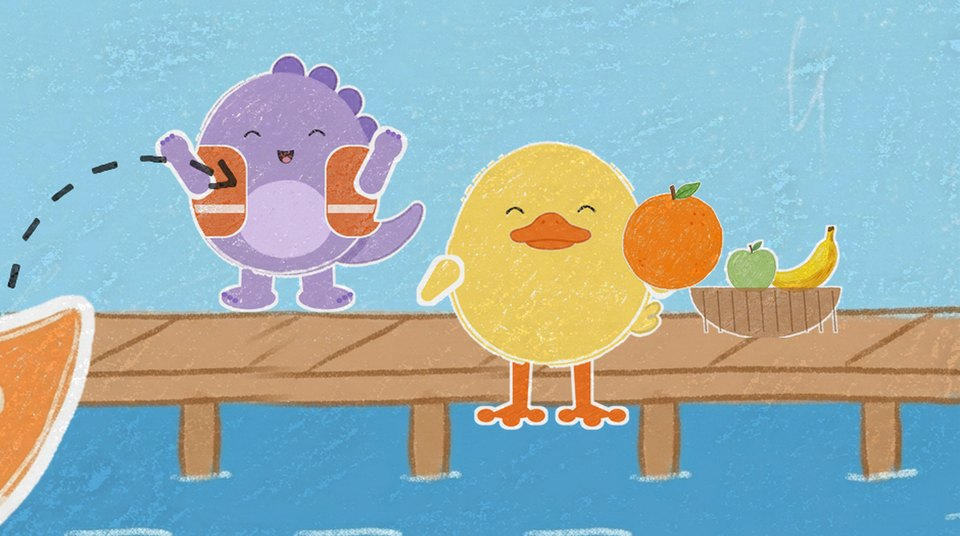
”En halva var –”: samma bild som 14e2–14g, utan klipp. Disa hoppar ur den tomma båten (fören syns i vänsterkanten) upp på sin plats på bryggan, med armarna upp. Agda står bredvid och håller upp den hela apelsinen hon hämtade.
4 tvåbild (bryggan)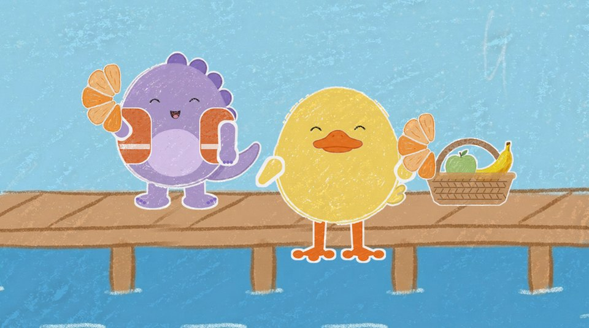
”– till dig och mig!”: på bryggan, båten är ur bild. Agda har delat apelsinen, och båda håller upp sin halva i höjd med ansiktet: en halva var.
4 tvåbild (bryggan)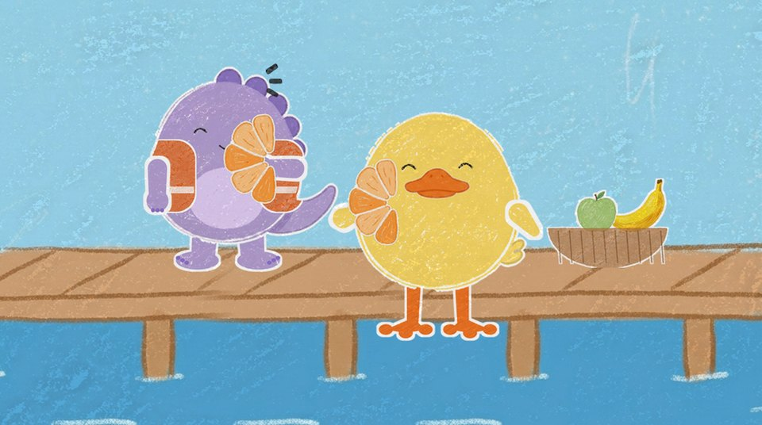
”Mums, mums, mums”: båda på bryggan äter sin halva, en tugga per ”mums”.
4 tvåbild (bryggan)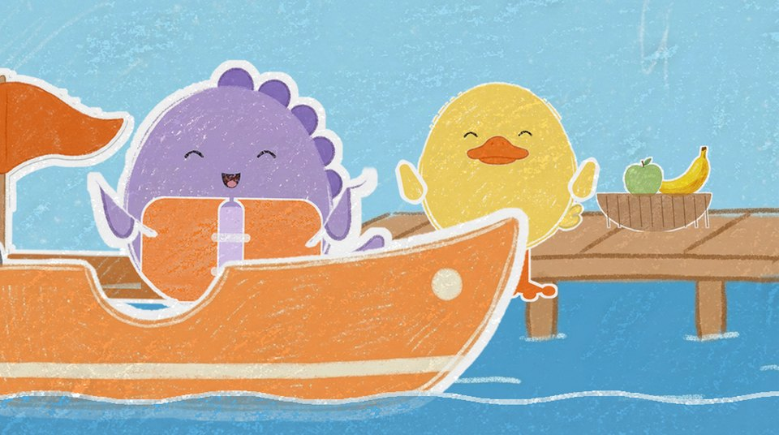
”– hurra, hurra!”: båda sträcker armarna upp. Apelsinen är slut, så händerna är fria till dansen.
4 tvåbild (bryggan)Danspaus · discot
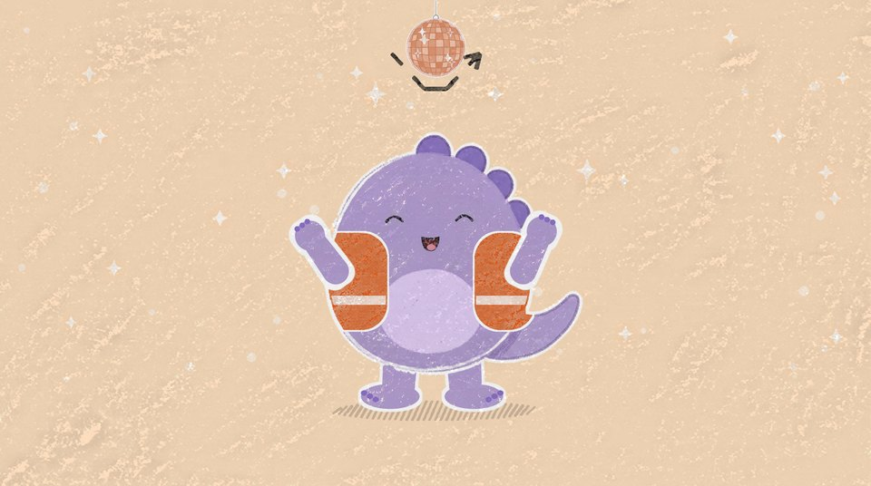
(boing!)
”Danspaus!”: klipp till discot, ljusorange med en orange discokula som snurrar sakta och kastar ljusprickar. Disa har klivit ur båten vid bryggan och dansar stor mitt i bild med armarna upp, med ett litet stjärnregn runt sig.
6 dansbild (discot)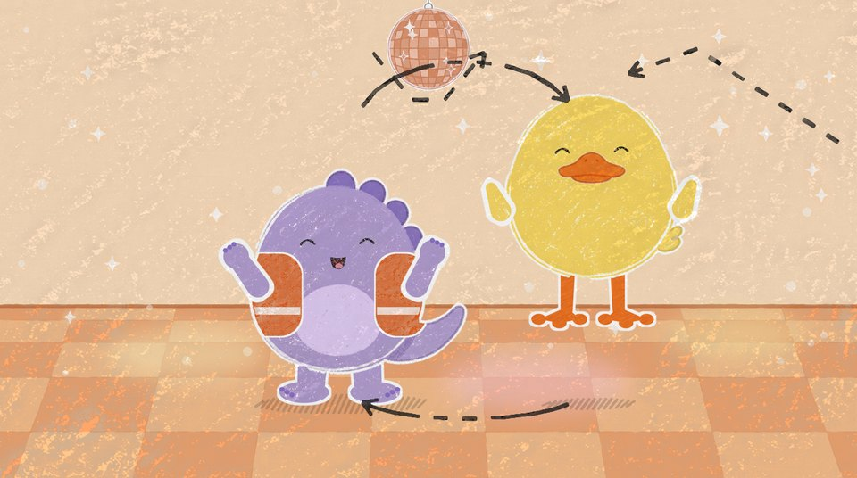
(boing!)
”(Danspaus!)”, ekot: Agda hoppar in från höger och landar bredvid henne i höger tredjedel, så att paret står i mitten, båda lite mindre (samma bild utan klipp).
6 dansbild (discot)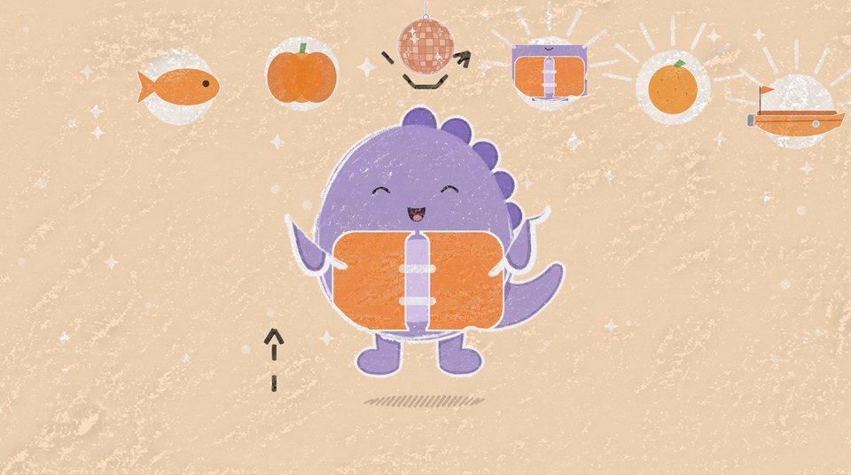
”Hoppa, hoppa!”: solobild, grodan Gurra ensam och stor mitt i bild, hoppar, stjärnregn runt honom.
6 dansbild (discot)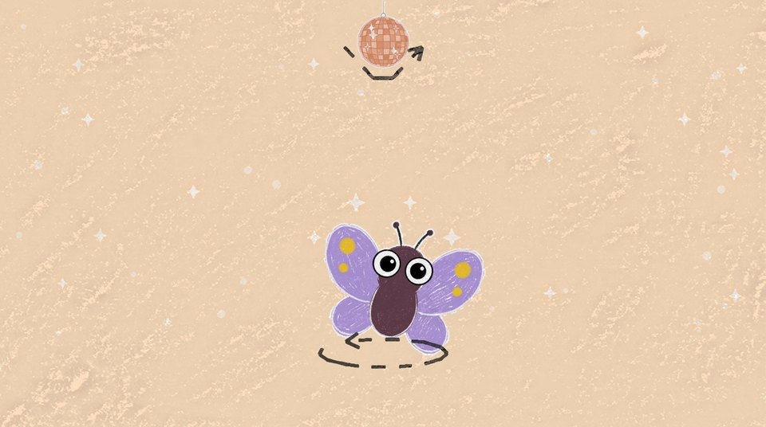
(fladder)
”Snurra runt!”: solobild, fjärilen Fia snurrar i luften, stjärnregn runt henne.
6 dansbild (discot)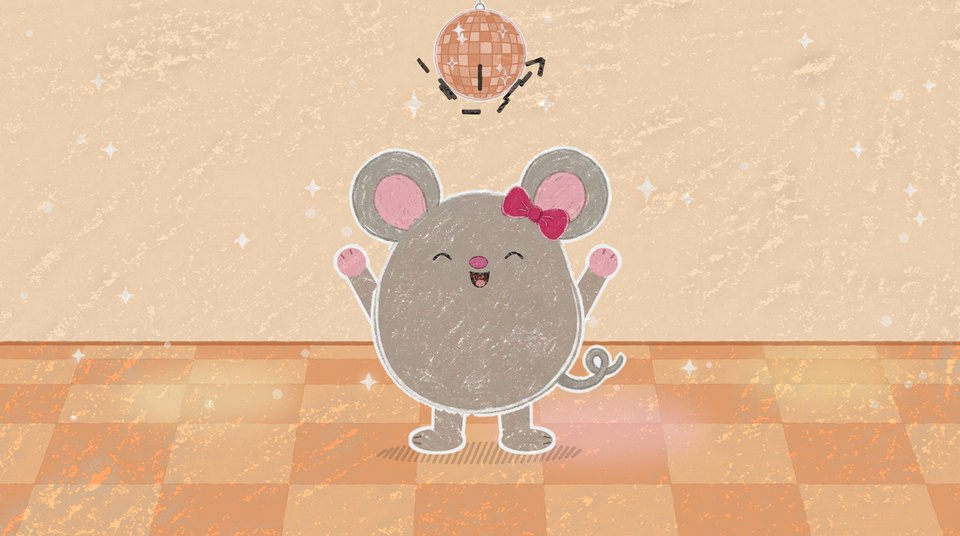
(klapp, klapp)
”Klappa, klappa!”: solobild, musen Mille klappar med armarna upp, stjärnregn runt henne.
6 dansbild (discot)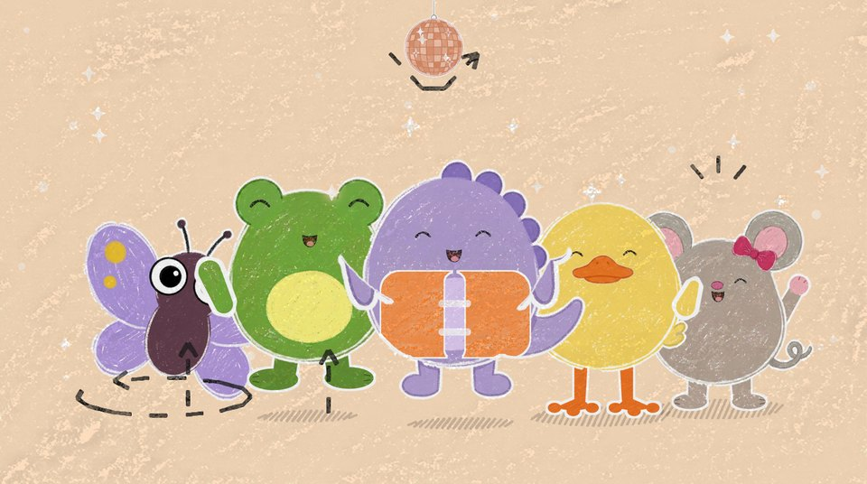
”Alla dansar – orange dans!”: alla fem i ett svagt V med luft emellan, Disa i mitten lite större och ett steg fram, Gurra och Agda bredvid, Mille ytterst och Fia flygande ovanför Gurras axel. Disa står på samma plats i hela raden (15f–g, 16d–e). Disa och Agda har armarna upp, statisterna gör sin rörelse.
6 dansbild (discot)”(Orange dans!)”, ekot, och grooven före sista refrängen (kortad till ca 4 s, se Klippet): samma rad, Disa och Agda gungar med händerna på magen.
6 dansbild (discot)(pop)
Sista refrängen i discot, en snabb solobild per sak. Småbilderna poppar upp i en båge som hänger under discokulan, med luft till kanterna. ”Fisken – orange!”: grodan hoppar och fisken hoppar bredvid honom; fisken poppar upp som första småbild i bågen.
6 dansbild (discot)(pop)
”Fågeln – orange!”: solobild, musen klappar och fågeln fladdrar bredvid henne. Fågeln poppar upp i bågen.
6 dansbild (discot)(pop, pop, pop)
”Väst och apelsin och båt – orange!”: solobild, Disa hoppar med armarna upp (lite mindre, så att hon inte når upp i bågen). Västen, apelsinen och båten poppar upp i bågen, en per ord.
6 dansbild (discot)”Orange är bästa färgen”: alla fem igen i raden, Disa och Agda med händerna på magen.
6 dansbild (discot)”som en fin apelsin!”: kvar i discot, alla fem i raden. Apelsinen i bågen lutar och gungar extra, med en gungpil som kulans.
6 dansbild (discot)(tut, tut)
”Hej då, hej då – tut, tut!”: kvar i discot, under bågen med småbilderna. Disa sitter i båten på en mjuk remsa vatten längs golvet och puttrar från vänster tredjedel in till mitten och vinkar, där slutet tar vid; tutet är båtens mistlur. De andra har dansat ut ur bild. Sångens outro är kortat till 3 s och tonas ut i slutet av bilden.
6 dansbild (discot)Avslutning
(swoosh)
Slutet, som 005: kvar i discot, båten mitt i bild där 16f slutade. Disa i båten vinkar, och en kritiris (en vinglig cirkel med nio bucklor och krämvit kant) sluter sig runt hennes ansikte på 1,6 s, håller på henne 1,2 s, stängs på 0,8 s, en stjärnglimt i det svarta och slutar svart. Sångens outro fortsätter under och tonas ut de sista 2 s. Inget fast outro efter.
kritirisAnteckningar
- Ingen säger det som sjungs. Ekot sjungs av kören. Varje orange sak har en rörelse i bild i stället för en replik: plask (06b), stor (07b), dunk (08c), rund (11b).
- Refrängen är en dans (05, 09 och sista refrängen 15), lugn och likadan alla tre gångerna: en dansbild på sjön som blir orange under refrängen, en bubbla med en nöjd apelsin på rad 6 och en närbild på ”Titta ut!”.
- Båten är i lager: bortre relingen med flaggan och motorn, Disa, skrovet, Disas armar. Den gungar på vågorna i stället för att hjulen snurrar; vattnet ligger framför skrovets nederkant. Disas flytväst är ritad i kod.
- Bryggan: Agda sitter på bryggkanten med korgen, båten lägger till nedanför. Disa stannar i båten hela tiden vid bryggan (antagande).
- Platshållare: inga, alla saker är riktiga bilder ur
assets/. - Sångraderna under varje bild läses ur sang.md (♪ sjungs, gul lapp = paus eller lucka). Fetstilt = repliker.
- Byggs om med
~/.claude/skills/ai-video/.venv/bin/python -I bygg.pyi den här mappen.